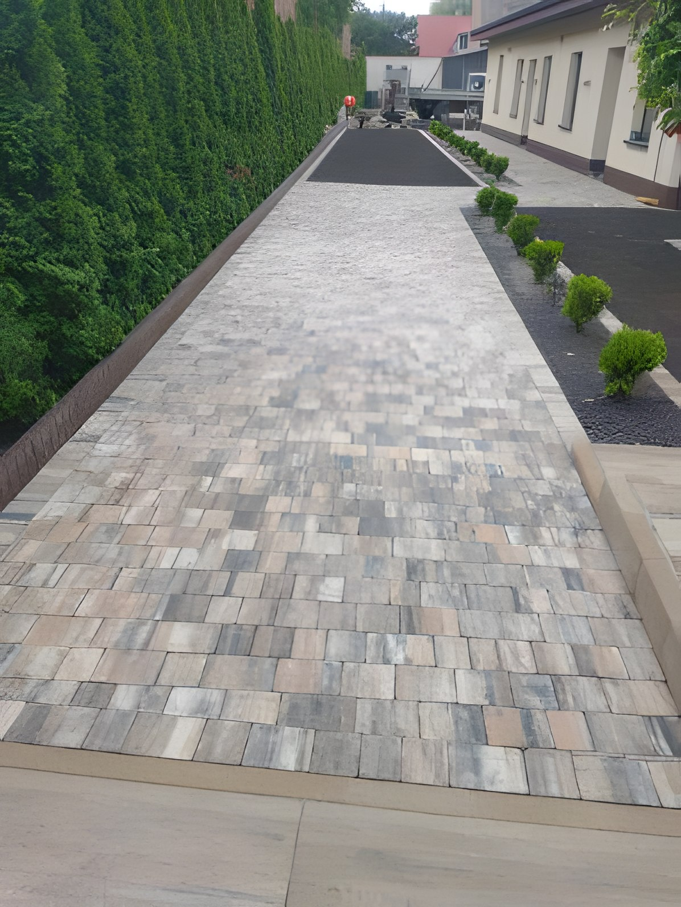
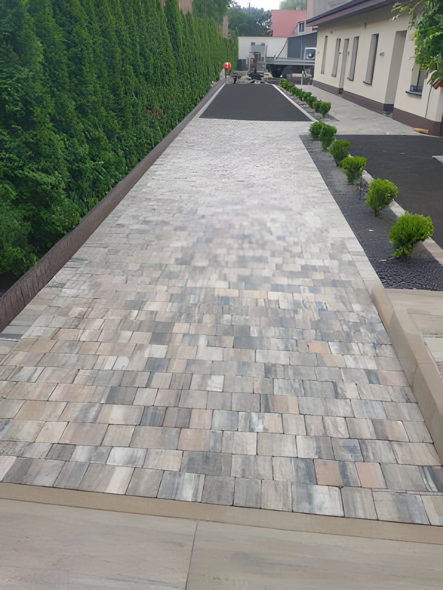
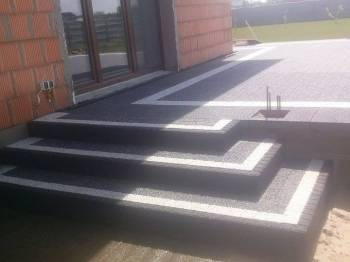
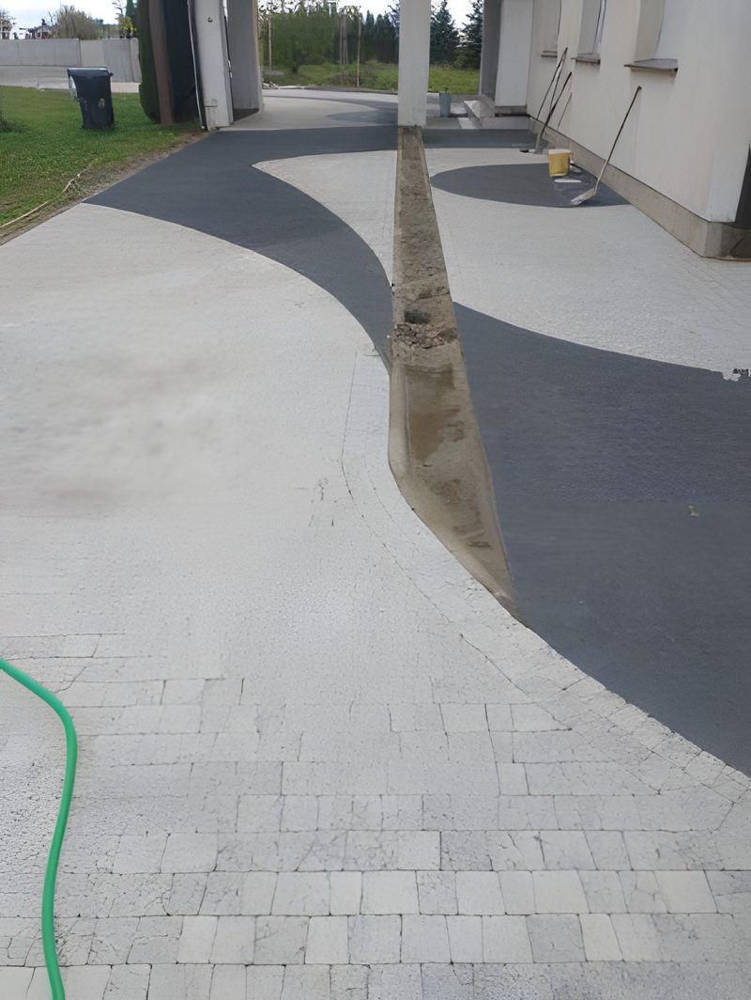
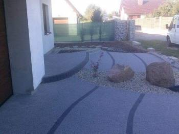
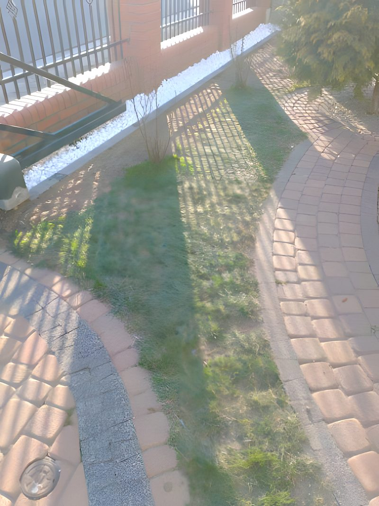
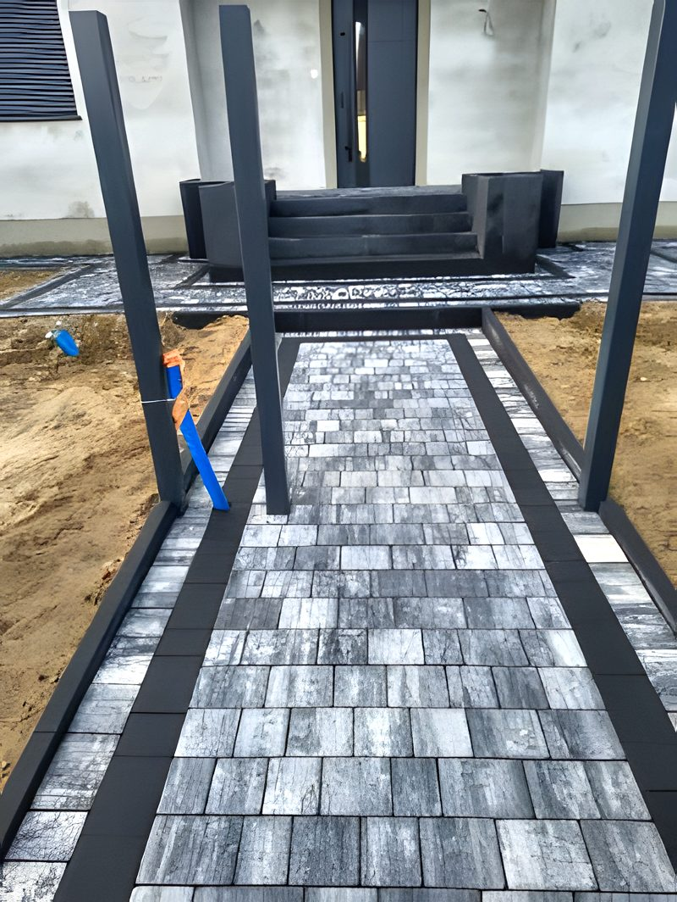

Układamy kostkę brukową, podjazdy, tarasy i schody, zakładamy ogrody i montujemy nawadnianie. Jedna ekipa robi całość - od podbudowy po nasadzenia i wyjścia pod wodę. Działamy w Ostrowie Wielkopolskim i okolicy.
Zadzwoń teraz +48 693 585 131Prosty, przewidywalny proces.
Przyjeżdżamy, oglądamy, doradzamy. Bez opłat i bez zobowiązań.
Jasna cena i termin na piśmie - zanim cokolwiek ruszy.
Robimy zgodnie ze sztuką, na czas, dbając o porządek.
Sprzątamy po sobie i dajemy gwarancję na robociznę.

Większość brukarzy kończy na ułożeniu kostki, a ogród i nawadnianie zostawia komuś innemu. U nas całe obejście robi jedna ekipa, bez zgrywania terminów kilku firm i bez przerzucania odpowiedzialności między wykonawcami.
Robimy całe obejście - od podbudowy i kostki po ogród i nawadnianie. Poniżej najczęstsze prace, pełna oferta tutaj.
Kawałek tego, co robimy na co dzień - podjazdy, tarasy i ścieżki z kostki brukowej. Każda nawierzchnia stoi na porządnie przygotowanej podbudowie.





Ocena 5,0 w Google.
Panowie układający kostkę wykazali się wielkim profesjonalizmem, jednocześnie doradzili mi w niektórych kwestiach. Praca wykonana dokładnie. Są godni polecenia. Wspaniali fachowcy.
Polecam w 100%. Profesjonalizm w wykonaniu jak i doradzaniu.
Polecam, robota zrobiona.
Zadzwoń lub napisz - przyjedziemy, obejrzymy i podamy jasną cenę. Bez zobowiązań.